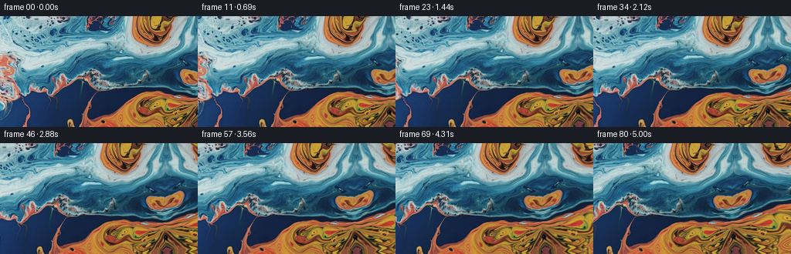
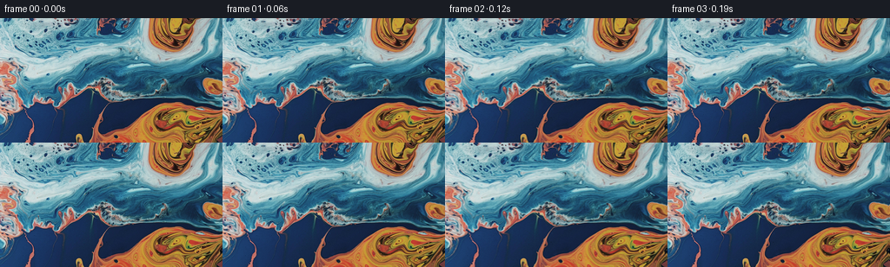

CODING AGENTS AS PIXEL WORLD MODELS
traex/GPT-6.1-Sol · 0002_s4
点击播放 · 原生 RGB 像素
逐轮保存的候选
回放视频、检查图与代码变化。
每份候选均可单独播放。实际图片检查记录在下方工具轨迹中。
候选 01播放与检查图
点击播放 · 原生 RGB 像素

展开代码变化
--- 上一保存版本
+++ 本次保存版本
@@ -0,0 +1,182 @@
+"""Pixel-only macro-liquid animation, with a rightward tracking camera.
+
+The photograph supplies every colour and all the liquid detail. A smoothly
+sheared, nonperiodic reflected continuation supplies the small newly exposed
+area; an incompressible, slowly circulating flow moves the liquid independently
+of the camera. Sampling always goes back to the original texture (there is no
+iterated image warping or progressive loss of detail).
+"""
+
+from pathlib import Path
+
+import cv2
+import numpy as np
+from PIL import Image
+from scipy.ndimage import gaussian_filter, map_coordinates, spline_filter
+
+import artifact_io
+
+
+ROOT = Path(__file__).resolve().parent
+
+
+def mirrored_coordinate(coordinate, size):
+ """Reflect continuous coordinates, without an artificial flat edge."""
+ period = 2.0 * (size - 1)
+ phase = np.mod(coordinate, period)
+ return np.minimum(phase, period - phase)
+
+
+def make_texture(first, width=400, margin=32):
+ h, w = first.shape[:2]
+ # The original rectangle is untouched. The extension is deformed rather
+ # than tiled: its colour islands continue, but its small ripples don't form
+ # a conspicuous bilateral repeat about the right border.
+ y, x = np.mgrid[0:h, 0:width].astype(np.float64)
+ d = np.maximum(x - (w - 1), 0)
+ source_x = x.copy()
+ source_y = y.copy()
+ right = x > w - 1
+ bend_x = (
+ 0.095 * np.sin(y / 27.0 + 0.5)
+ + 0.065 * np.sin(y / 59.0 + d / 42.0 + 1.4)
+ )
+ bend_y = (
+ 0.16 + 0.075 * np.sin(y / 34.0 - 0.7)
+ + 0.035 * np.sin(y / 13.0 + d / 35.0)
+ )
+ source_x[right] = ((w - 1) - d * (0.88 + bend_x))[right]
+ source_y[right] = (y + d * bend_y)[right]
+ source_x = mirrored_coordinate(source_x, w)
+ source_y = mirrored_coordinate(source_y, h)
+ coords = np.stack([source_y, source_x])
+ texture = np.stack(
+ [map_coordinates(first[..., c].astype(float), coords,
+ order=3, mode="mirror") for c in range(3)], axis=-1
+ )
+
+ # Continue the large-scale edge tangent before bending it back into the
+ # donor texture. Only the newly exposed area receives this short-range
+ # correction. The high-frequency ripple detail remains intact.
+ blurred = gaussian_filter(first.astype(float), (1.15, 1.15, 0))
+ slope = np.clip((blurred[:, -1] - blurred[:, -4]) / 3.0, -5.0, 5.0)
+ distances = np.arange(1, width - w + 1, dtype=float)
+ correction_weight = 2.0 * distances * np.exp(-distances / 4.0)
+ texture[:, w:] += slope[:, None] * correction_weight[None, :, None]
+ texture = np.clip(texture, 0, 255)
+ texture[:, :w] = first
+ texture = np.pad(texture, ((margin, margin), (margin, margin), (0, 0)),
+ mode="reflect")
+ # Prefilter once, rather than once for each frame or colour channel.
+ splines = [spline_filter(texture[..., c], order=3, mode="mirror")
+ for c in range(3)]
+ return texture, splines
+
+
+def velocity(x, y, t):
+ """A low-speed, divergence-free mixture of liquid eddies (pixels/sec)."""
+ vx = np.zeros_like(x)
+ vy = np.zeros_like(y)
+ # The first two eddies gently turn the orange lobes in their blue surrounds.
+ eddies = (
+ (186.0, 19.0, 39.0, 1.28),
+ (224.0, 132.0, 54.0, -1.35),
+ (90.0, 43.0, 61.0, -0.72),
+ (161.0, 83.0, 36.0, 0.66),
+ (309.0, 51.0, 47.0, 0.85),
+ )
+ for cx, cy, radius, strength in eddies:
+ dx, dy = (x - cx) / radius, (y - cy) / radius
+ falloff = np.exp(-0.5 * (dx * dx + dy * dy))
+ amplitude = strength * (1 + 0.10 * np.sin(0.63 * t + cx / 67))
+ vx += -dy * falloff * amplitude
+ vy += dx * falloff * amplitude
+ # Each sine-streamfunction has an analytic perpendicular gradient. This
+ # prevents the surface from looking as though it is stretching like rubber.
+ for wavelength, angle, phase, amplitude in (
+ (94.0, 0.55, 0.8, 0.20),
+ (58.0, -0.83, 2.1, 0.13),
+ (32.0, 1.2, 0.3, 0.07),
+ ):
+ k = 2 * np.pi / wavelength
+ wave = np.cos(k * (np.cos(angle) * x + np.sin(angle) * y)
+ + phase + 0.36 * t)
+ vx += amplitude * np.sin(angle) * wave
+ vy -= amplitude * np.cos(angle) * wave
+ return vx, vy
+
+
+def backtrace(x, y, time):
+ """Backwards midpoint integration in material, not screen coordinates."""
+ steps = max(1, int(np.ceil(time / 0.42)))
+ dt = time / steps
+ sx, sy = x.copy(), y.copy()
+ t = time
+ for _ in range(steps):
+ vx, vy = velocity(sx, sy, t)
+ mx, my = sx - vx * dt * 0.5, sy - vy * dt * 0.5
+ vx, vy = velocity(mx, my, t - dt * 0.5)
+ sx -= vx * dt
+ sy -= vy * dt
+ t -= dt
+ return sx, sy
+
+
+def generate():
+ first = np.array(Image.open(ROOT / "first_frame.png").convert("RGB"))
+ assert first.shape == (144, 256, 3)
+ margin = 32
+ _, splines = make_texture(first, margin=margin)
+ y, x = np.mgrid[0:144, 0:256].astype(np.float64)
+ frames = np.empty((81, 144, 256, 3), dtype=np.uint8)
+ frames[0] = first
+ duration = 80 / 16.0
+ acceleration_time = 0.16
+ denominator = duration - acceleration_time * (
+ 1 - np.exp(-duration / acceleration_time))
+ for i in range(1, 81):
+ t = i / 16.0
+ pan = 72.0 * (t - acceleration_time * (
+ 1 - np.exp(-t / acceleration_time))) / denominator
+ # A camera travelling right moves the visible liquid left.
+ wx = x + pan
+ wy = y
+ sx, sy = backtrace(wx, wy, t)
+
+ # Very slight evolving refraction at the smaller ripple scale. The
+ # displacement is a difference from t=0, hence no start-frame jump.
+ phase_a = 0.19 * sx + 0.23 * sy
+ phase_b = -0.27 * sx + 0.13 * sy + 1.7
+ sx += 0.18 * (np.sin(phase_a - 1.2 * t) - np.sin(phase_a))
+ sy += 0.22 * (np.sin(phase_b + 0.97 * t) - np.sin(phase_b))
+ coords = np.stack([sy + margin, sx + margin])
+ rgb = np.stack([
+ map_coordinates(c, coords, order=3, mode="mirror", prefilter=False)
+ for c in splines
+ ], axis=-1)
+
+ # Soft light riding on the moving surface, never a colour replacement.
+ light_phase = wx / 36.0 + wy / 48.0
+ light = 0.008 * (np.sin(light_phase - 0.75 * t)
+ - np.sin(light_phase))
+ rgb *= 1.0 + light[..., None]
+ frames[i] = np.rint(np.clip(rgb, 0, 255)).astype(np.uint8)
+
+ artifact_io.save(frames, ROOT)
+ # Numeric inspection avoids all visual/image tools.
+ delta = np.abs(np.diff(frames.astype(np.float32), axis=0)).mean(axis=(1, 2, 3))
+ assert np.array_equal(frames[0], first)
+ print("Saved", frames.shape, frames.dtype)
+ print("Adjacent-frame RGB difference, min/mean/max:",
+ float(delta.min()), float(delta.mean()), float(delta.max()))
+ flows = []
+ for i in (10, 30, 50, 70):
+ a = cv2.cvtColor(frames[i], cv2.COLOR_RGB2GRAY)
+ b = cv2.cvtColor(frames[i + 1], cv2.COLOR_RGB2GRAY)
+ flow = cv2.calcOpticalFlowFarneback(a, b, None, 0.5, 3, 21, 4, 7, 1.5, 0)
+ flows.append(np.median(flow[12:-12, 12:-12], axis=(0, 1)))
+ print("Median optical flow (x,y), pixels/frame:", np.asarray(flows))
+
+
+if __name__ == "__main__":
+ generate()
候选 02播放与检查图
点击播放 · 原生 RGB 像素


展开代码变化
--- 上一保存版本
+++ 本次保存版本
@@ -10,6 +10,7 @@
from pathlib import Path
import cv2
+import imageio.v2 as imageio
import numpy as np
from PIL import Image
from scipy.ndimage import gaussian_filter, map_coordinates, spline_filter
@@ -163,6 +164,11 @@
frames[i] = np.rint(np.clip(rgb, 0, 255)).astype(np.uint8)
artifact_io.save(frames, ROOT)
+ imageio.mimwrite(
+ ROOT / "video.mp4", frames, fps=16, codec="libx264",
+ pixelformat="yuv420p", macro_block_size=1,
+ ffmpeg_params=["-crf", "17", "-preset", "slow", "-movflags", "+faststart"],
+ )
# Numeric inspection avoids all visual/image tools.
delta = np.abs(np.diff(frames.astype(np.float32), axis=0)).mean(axis=(1, 2, 3))
assert np.array_equal(frames[0], first)
可观测工具轨迹
实际执行的命令与返回图片。
命令 1exit 0
/bin/bash -lc "ls -la && cat GENERATION_RULES.md && printf '\\n---PROMPT---\\n' && cat prompt.txt"
命令 2exit 0
/bin/bash -lc "cat task_spec.json && cat artifact_io.py && python - <<'PY'
from PIL import Image
import numpy as np
im=np.array(Image.open('first_frame.png').convert('RGB'))
print('shape',im.shape,'minmax',im.min(axis=(0,1)), im.max(axis=(0,1)))
print('mean',im.mean(axis=(0,1)), 'std',im.std(axis=(0,1)))
# cell-averaged RGB
small=np.array(Image.fromarray(im).resize((32,18),Image.Resampling.BOX))
for r in small:
print(' '.join('%02x%02x%02x'%tuple(c) for c in r))
PY"命令 3exit 0
/bin/bash -lc "python - <<'PY'
import numpy as np
from PIL import Image
im=np.array(Image.open('first_frame.png').convert('RGB'))
print('ASCII colour map: . navy, b blue, c cyan, W pale, O orange, r red, m mixed')
im=np.array(Image.fromarray(im).resize((96,48),Image.Resampling.BOX)).astype(float)
r,g,b=np.moveaxis(im,-1,0)
c=np.full(r.shape,'m')
c[(b>r*1.17)&(g>r*1.1)]='b'
c[(b>r*1.17)&(g>r*1.1)&(g>105)]='c'
c[(r>g*1.18)&(r>b*1.3)]='O'
c[(r>g*1.18)&(r>b*1.1)&(g>b*.9)&(b>70)]='r'
c[(r>145)&(g>160)&(b>160)&(np.maximum.reduce([r,g,b])-np.minimum.reduce([r,g,b])<45)]='W'
c[(r+g+b)<135]='.'
for row in c: print(''.join(row))
orig=np.array(Image.open('first_frame.png')).astype(float)
for axis in [0,1]:
d=np.abs(np.diff(orig,axis=axis))
print('pixel diff',axis,'mean',d.mean(), 'q',np.quantile(d,[.5,.9,.99]))
PY"命令 4exit 0
/bin/bash -lc "python - <<'PY'
import importlib.util
for n in ['scipy','cv2','imageio','imageio_ffmpeg']:
print(n,bool(importlib.util.find_spec(n)))
from PIL import Image
im=Image.open('first_frame.png')
print(im.mode)
PY"命令 5exit 0
/bin/bash -lc 'OPENBLAS_NUM_THREADS=1 python generate.py'
命令 6exit 0
/bin/bash -lc "OPENBLAS_NUM_THREADS=1 python generate.py && python - <<'PY'
from pathlib import Path
import numpy as np
from PIL import Image
p=np.load('pixels.npz')['pixels']
f=np.array(Image.open('first_frame.png'))
rgb=np.stack([(p[:,:,0]>>16)&255,(p[:,:,0]>>8)&255,p[:,:,0]&255],axis=-1).astype('uint8')
assert np.array_equal(rgb,f)
assert p.shape==(144,256,81)
assert len(list(Path('frames').glob('*.png')))==81
print('Validated packed RGB shape, exact first frame, and 81 PNG frames.')
for fn in ['pixels.npz','video.mp4','index.html','generate.py']:
print(fn,Path(fn).stat().st_size)
PY"保存候选 2 份；完成命令 6 次；可验证图片返回 0 张。原始 API 响应与完整日志保留在本地。